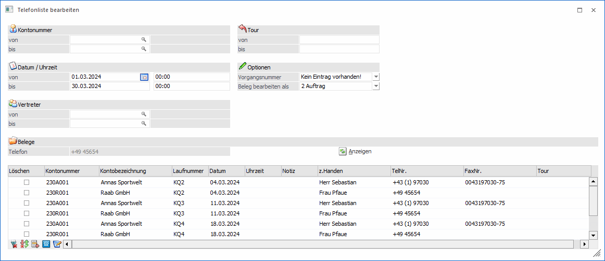

Selektion der gewünschten Termine
Hier bekommen Sie nun in tabellarischer Form alle aktuellen Termine aufgelistet.

Im oberen Bereich des Fensters, erhalten Sie nochmals die gleichen Selektionskriterien wie schon zuvor beim Starten der Telefonliste (Datum, Uhrzeit, Tour usw.).
Zusätzlich erhalten Sie folgende Selektionskriterien:
Ø Kontonummer
Sie können auf bestimmte Kunden einschränken, deren Termine Sie angezeigt bekommen wollen.
Ø Vorgangsnummer
Hier kann auf eine bestimmte Vorgangsnummer eingeschränkt werden (die Auswahl der Vorgangsnummer hängt vom Kennzeichen in den Fakt-Parametern ab).
Ø Anzeigen-Button
Wurden alle Selektion vorgenommen, so wird die Tabelle nach Drücken des Buttons "Anzeigen" aktualisiert.
Ø Ausgabe - Liste
Über diesen Button kann eine Liste über die selektierten Termine, wahlweise am Bildschirm oder am Drucker (bzw. Spooler), angezeigt werden.